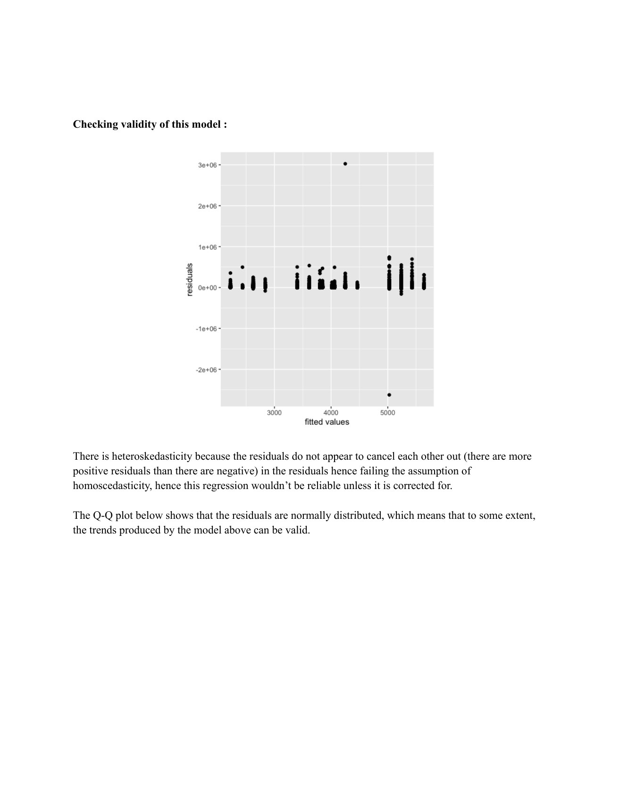

Health & livelihoods


A group project on the relationship between household amenities and health expenditure using NSS 71st-round data. We looked at cooking fuel, drainage and latrine facilities, with comparisons between public and private treatment. The report, descriptive tables and regression analysis are included below.
Files
- PDF · 9 pages
- PDF · 4 pages
- PDF · 6 pages
By Neha, Vighnesh, Saranyan, Vaibhav and Vijayshree.